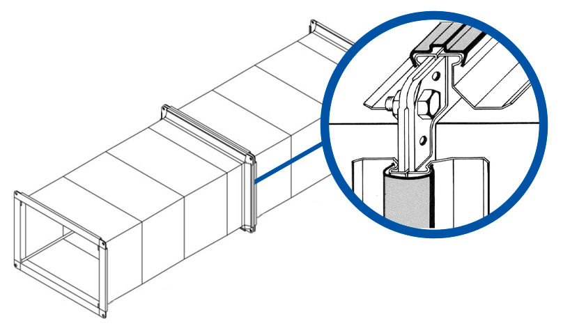

Burlete perimetral
sella el marco completo para minimizar fugas

Sistema de unión
Sistema TDC para conductos con estanqueidad y control en aplicaciones críticas.
El sistema TDC incorpora burlete en todo el perímetro del marco y trabaja con esquineros abulonados para lograr una unión firme, segura y confiable en instalaciones donde las fugas no son una opción.
Esquineros abulonados
aportan rigidez y cierre uniforme en toda la unión
Industria crítica
ideal para rubros farmacéuticos y hospitalarios
Cómo funciona
Una unión pensada para priorizar hermeticidad, firmeza estructural y rendimiento del sistema.
Este sistema contiene un burlete en todo el perímetro del marco, lo que garantiza, junto con el esquema de esquineros abulonados, una estanqueidad muy superior frente a alternativas más simples.

Lectura visual del sistema
El esquema muestra la configuración del marco TDC y su forma de cierre. El conjunto fue pensado para sostener presión, reducir fugas y ofrecer mayor seguridad en instalaciones donde el ensayo de estanqueidad forma parte del criterio de aceptación.
Cuándo conviene elegirlo
- Cuando el proyecto exige uniones más estancas y controlables.
- Cuando la pérdida de aire impacta en eficiencia y cumplimiento.
- Cuando el conducto debe responder a protocolos técnicos más estrictos.
- Cuando la prolijidad de montaje y el cierre uniforme son prioritarios.
Ventaja principal
La presencia del burlete perimetral mejora la estanqueidad de la unión y ayuda a sostener el rendimiento del sistema, reduciendo fugas y mejorando el aprovechamiento energético de la instalación.
Aplicaciones recomendadas
Es muy utilizado en industrias farmacéuticas y hospitalarias, además de otras obras donde se requiere una ejecución más rigurosa y conductos con mejor comportamiento frente a ensayos de estanqueidad.
Criterio de montaje
Funciona mejor cuando la fabricación del marco, el armado de los esquineros y la secuencia de montaje se ejecutan con precisión para sostener el cierre uniforme en todo el perímetro.
Asesoramiento técnico
Si tu proyecto necesita mayor estanqueidad, te ayudamos a definir el sistema correcto.
Podemos revisar planos, tipo de instalación, exigencia de hermeticidad y condiciones de obra para indicarte si el TDC es la alternativa adecuada.